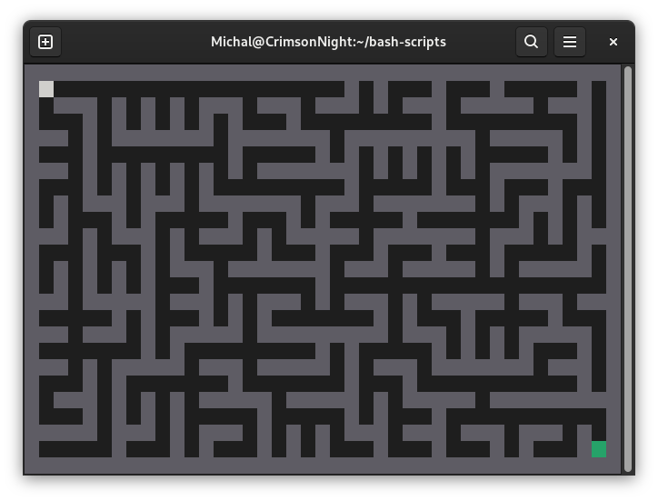

Labyrinth in Bash
A simple labyrinth game in terminal, written in Bash.
The labyrinth is randomly generated based on a modified Prim's algorythm. Its size is based on the size of the terminal.
Here is a fragment of the code responsible for labyrinth's generation (we start with all walls and then remove them):
check() {
s=$1
snext=$(( $s - 2 ))
if [[ ${allowed[$snext]} = 2 && $snext -gt 0 ]]; then
next=(${next[@]} $s $snext)
fi
snext=$(( $s + 2 ))
if [[ ${allowed[$snext]} = 2 && $snext -lt $total ]]; then
next=(${next[@]} $s $snext)
fi
snext=$(( $s - 2 * $cols ))
if [[ ${allowed[$snext]} = 2 && $snext -gt 0 ]]; then
next=(${next[@]} $s $snext)
fi
snext=$(( $s + 2 * $cols ))
if [[ ${allowed[$snext]} = 2 && $snext -lt $total ]]; then
next=(${next[@]} $s $snext)
fi
}
# while not empty
while [[ (! -z ${next[@]}) ]]; do
# random pair
id=$(( (2 * $RANDOM) % ${#next[@]} ))
s1=${next[$id]} # connected
s2=${next[$(( $id + 1 ))]} # possibly disconnected
unset 'next[$id]'
unset 'next[$(( $id + 1 ))]'
# shift to avoid empty spaces
next=(${next[@]})
if [[ ${allowed[$s2]} = 2 ]]; then
check $s2
allowed[$s2]=1
allowed[$(( ( $s1 + $s2 ) / 2 ))]=1
fi
done